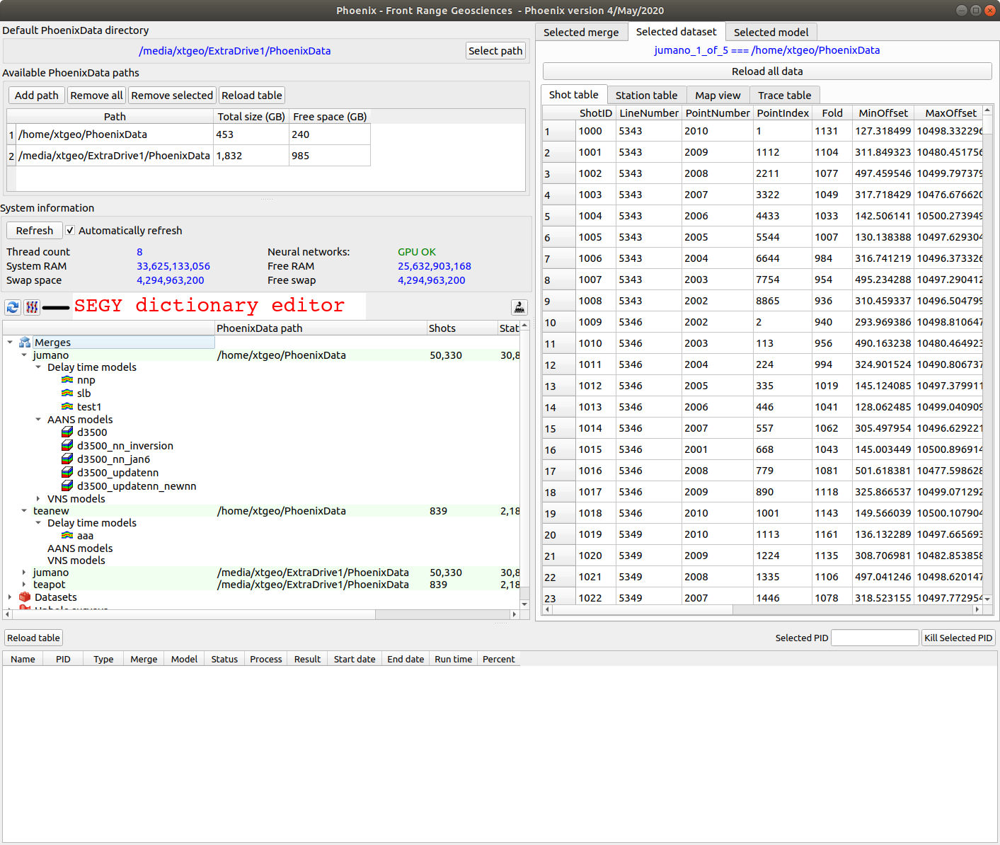

Phoenix is designed to handle the largest surveys. It is possible to import thousands pf SEGY files and distribute the imported data over any number of servers. The sophisticated distributed project logic in Phoenix hides the complexity from the user. blah blah blah
Following the SPS standard (found at seg.org standards web page) shots and stations are uniquely identified by three numbers - LineNumber, PointNumber, and PointIndex.
The following information must be available if the SEGY trace headers:
Navigate to the main Phoenix application and click on the “Open SEGY viewer / editor” button:

Open the SEGY file by clicking “Select SEG-Y file”, then create a new dictionary file by clicking on the “new” icon in the lower pane:
Open the SEGY import wizard: